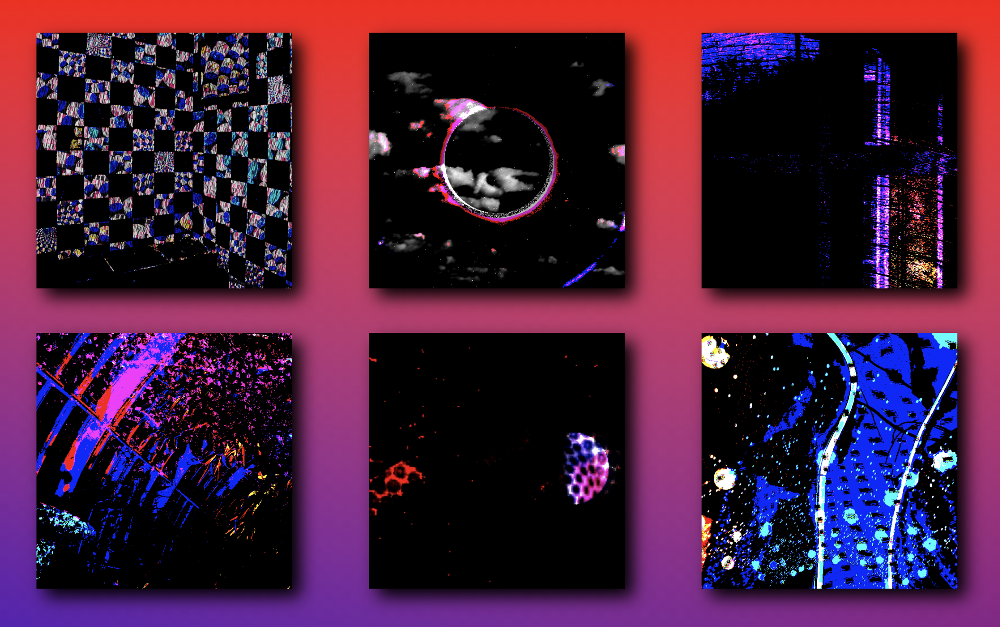

Hi there! I'm a recent computer science graduate who enjoys dabbling in web design.
This site is a collection of some of the projects I've gotten to be a part of during my undergraduate studies.
A project that two undergrads and I were assigned to work on for the Pittsburgh volunteer group Grief to Action as a part of our capstone fulfillment.
G2A works to help marginalized communities through data science. For PxPUC we compiled a database of police union contracts that can be searched all at once, or viewed/downloaded individually. We also worked on a tool for helping users to identify problematic language within said contracts, as well as a tool that walks users through a generalized process of how police misconduct investigations work. The project aims to bring awareness to information that should be readily available to everyone but currently is not.
I helped to create the tools, drew mockups, and implemented the majority of the design aspects for the site.
Python, Django, HTML/CSS/Javascript, Bootstrap, mockups created with Sketch
Part of a design project I did for CS1637: Introduction to Human-Computer Interaction, where we were tasked with coming up with an idea for an application that could help solve some problem caused by COVID-19 and creating a mockup for it.
The idea I came up with was Accord, a play on a popular community app called Discord, with the goal for people to make new social connections while maintaining social distancing. The idea is that it would have similar functionality to discord (instant messaging, voice chatting), but with a focus on local communities and the added ability to find and join groups/servers within the app itself.
Mockup created with Figma
A very basic webpage for displaying a collection of gifs I created for my final project for SA1270: Digital Imaging. The website was hosted online at gather.town where we held a virtual exhibition for the class.
Hovering over an image enlarges it.
HTML/CSS, Photoshop
A mobile voting app for Android devices created for CS1631: Software Design Methodology. Users can create topics, vote, and receive results either via the app or via text.
Java, Android Studio
A simple text-based social media site designed and implemented over the course of a semester with a team of three other classmates. Create an account, make and vote on posts, and sort posts by most recent or by highest score.
Python, HTML/CSS/JavaScript, Google App Engine, Google Datastore (now Google Firestore)